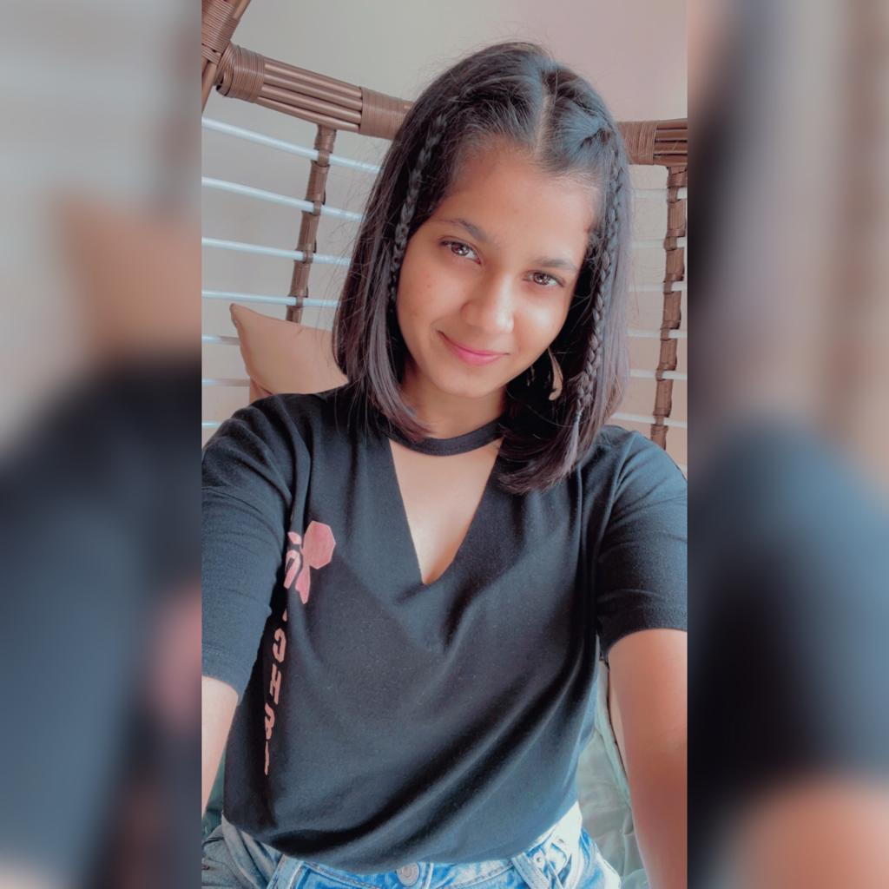

Sophomore at National Institute of Technology, Durgapur

About Me!
Well hey! I'm Siddhi Agarkar. I come from Mumbai, Maharashtra. I was born in the year 2003, on the 1st of February in Pune. I have a passion for music, and intend to explore the field in the near future. My hobbies include singing, cycling and playing the guitar. From a young age itself, I was very fond of programming. I am currently exploring the fields of web development and competitive programming, and I wish to pursue my career in Computer Science. I consider myself to be a very enthusiastic learner, and enjoy learning new things, may it be a foreign language, musical instrument, or a sport I haven't played before!
Education
I have done my schooling in an ICSE board from St. Helena's School, Pune uptil class 10 and scored 91% in the 10th boards. I then moved to Kota, Rajasthan in 2019 for two years. I went to Resonance Eduventures for the preparation of JEE(Main+Advanced) and graduated my 12th class from St. John's School. In the 12th boards, again I scored 91%. After appearing for the competitive exams, I got myself admitted in the National Institute of Technology, Durgapur for pursuing Bachelor of Technology in Electronics and Communication Engineering. Hoping I do well in the upcoming years too!
Coding Skills
My Contact
If you wish to get in touch with me, the following references would help!
Email ID: siddhiagarkar1203@gmail.com Mobile no.: +91 9372583314